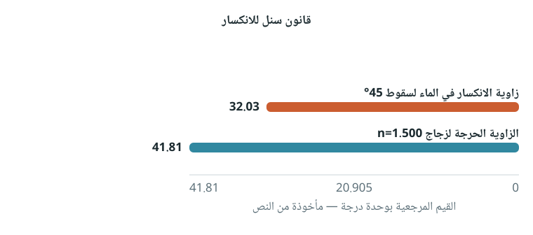

قانون سنل للانكسار
Snell's law of refraction
قانون سنل يحدد مسار الضوء عند عبوره سطحاً فاصلاً بين وسطين مختلفي معامل الانكسار: n₁·sin θ₁ = n₂·sin θ₂. يُفسّر انحناء الضوء في الماء والزجاج، وأساس تصميم العدسات والألياف الضوئية وقياس معامل الانكسار.
حين ينتقل الضوء من وسط إلى آخر مختلف في سرعته، ينحني مساره عند السطح الفاصل. وقانون سنل يصف هذا الانحناء: n₁·sin θ₁ = n₂·sin θ₂، حيث n معامل الانكسار لكل وسط وθ الزاوية المقيسة عن العمود على السطح لا عن السطح نفسه. والسبب الفيزيائي أن سرعة الضوء في الوسط تساوي c/n، فتتغير عند العبور، وللحفاظ على استمرارية مقدمة الموجة على السطح يجب أن تتغير الزاوية. مثال: شعاع يسقط من الهواء بزاوية 45° على سطح ماء معامله 1.333: sin θ₂ = 1.000 × sin 45°/1.333 = 0.5305، إذن θ₂ = 32.03°.
كيف تعمل الظاهرة؟
الضوء موجة كهرومغناطيسية، ومقدمة الموجة يجب أن تبقى متصلة على السطح الفاصل: النقاط التي تصل السطح في اللحظة نفسها يجب أن تخرج منه في اللحظة نفسها. وحين تكون سرعة الضوء في الوسط الثاني أقل، تقطع مقدمة الموجة مسافة أقصر في الزمن نفسه، فتميل المقدمة وتدور، وبالتالي يدور اتجاه الانتشار. وهذا الدوران هو الانكسار. وكلما زاد الفرق في السرعة زاد الانحناء، ولهذا ينحني الضوء أكثر في الألماس (n = 2.42) منه في الماء (n = 1.333).
العلاقة بالأرقام
n₁·sin θ₁ = n₂·sin θ₂، وn = c/v، والزاوية الحرجة sin θ_c = n₂/n₁ عند n₁ > n₂. مثال: ماء n = 1.333 إلى هواء n = 1.000 يعطي sin θ_c = 0.7502 وθ_c = 48.6°. وانتقال 45° من هواء إلى ماء: sin θ₂ = 0.7071/1.333 = 0.5305 وθ₂ = 32.03°. والانحراف الكلي δ = θ₁ − θ₂ = 45.00 − 32.03 = 12.97°. وسرعة الضوء في الماء: v = 299 792 458/1.333 = 2.249×10⁸ m/s.
مفاهيم متقاربة
يُفرَّق بين الانكسار والانعكاس الكلي الداخلي: الأول عبور جزئي مع انعكاس جزئي، والثاني يحدث فوق الزاوية الحرجة فينعكس كل الضوء. ويُفرَّق بين معامل الانكسار ومعامل الامتصاص: الأول يحدد السرعة والاتجاه، والثاني يحدد خفوت الشدة. ويُفرَّق بين قانون سنل ومبدأ فيرما: فيرما مبدأ عام يقول إن الضوء يسلك المسار الأقصر زمناً، وسنل نتيجة منه. وأخيراً يُفرَّق بين الانكسار عند سطح مستوٍ وعند سطح منحنٍ: القانون نفسه، لكن السطح المنحني يجمّع الأشعة أو يفرّقها فينتج عدسة.
حدود التطبيق
القانون صالح للأمواج في الأوساط المتجانسة المتصلة، ولا يصف الانتشار في أوساط متغيرة معامل الانكسار تدريجياً كالغلاف الجوي، حيث ينحني الشعاع على مسار منحنٍ ويُحلّ بمعادلة شعاعية. ولا يصف الانكسار في البلورات مزدوجة الانكسار، حيث يوجد معاملان مختلفان لاتجاهي الاستقطاب فينقسم الشعاع. ولا يُستعمل عند أبعاد تقارب طول الموجة، حيث تسود الحيود ولا يبقى مفهوم الشعاع صالحاً. كذلك لا يعطي شدة الضوء المنكسر، فذلك يحتاج معاملات فرينل.

| الكمية | القيمة | المصدر |
|---|---|---|
| سرعة الضوء في الفراغ c | 299 792 458 m·s⁻¹ | [1] |
| زاوية الانكسار في الماء لسقوط 45° | 32.03 درجة | [3] |
| الزاوية الحرجة لزجاج n=1.500 | 41.81 درجة | [3] |
المصادر
- 1 CODATA Value: speed of light in vacuum — NIST — CODATA 2022 recommended values (2024). physics.nist.gov/cgi-bin/cuu/Value?c · اطُّلع عليه 2026-11-21
- 2 CODATA Value: Planck constant — NIST — CODATA 2022 recommended values (2024). physics.nist.gov/cgi-bin/cuu/Value?h · اطُّلع عليه 2026-11-21
- 3 College Physics 2e — 25.3 The Law of Refraction — OpenStax, Rice University (2026). openstax.org/books/college-physics-2e/pages/25-3-the-law-of-refraction · اطُّلع عليه 2026-11-21
استشهد بهذا المصطلح
الصيغتان مبنيتان من بيانات الصفحة نفسها: العنوان والتاريخ ورابط النسخة المنشورة.
قانون سنل للانكسار — Snell's law of refraction. (2026). ديوان المعرفة — انفراد. https://infiradev.com/diwan/terms/term-snells-law.html
@misc{term-snells-law2026,
title = {قانون سنل للانكسار},
titleaddon = {Snell's law of refraction},
howpublished = {{ديوان المعرفة — انفراد} — مرجع علمي عربي},
year = {2026},
url = {https://infiradev.com/diwan/terms/term-snells-law.html},
urldate = {2026-11-26},
note = {مراجعة علمية: hermes (مراجعة معتمدة 2026-11-26)}
}
راجعه: hermes (مراجعة معتمدة 2026-11-26) · 2026-11-26 · آخر تحديث 2026-11-21